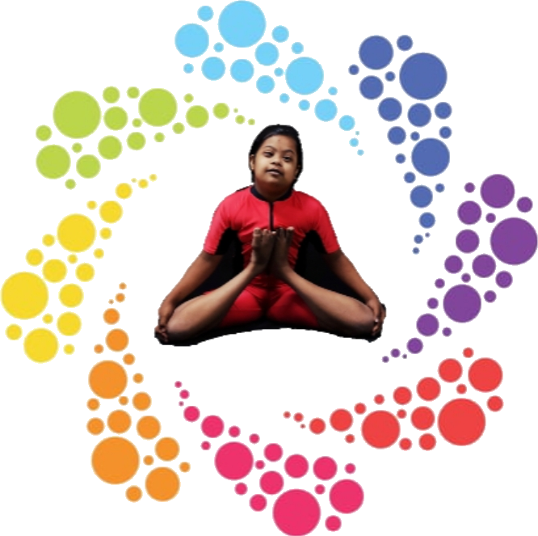
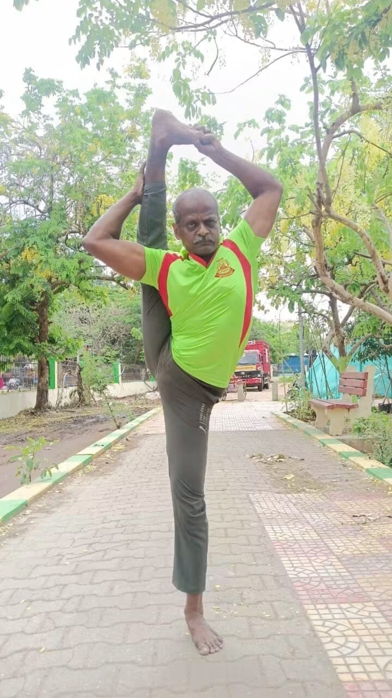
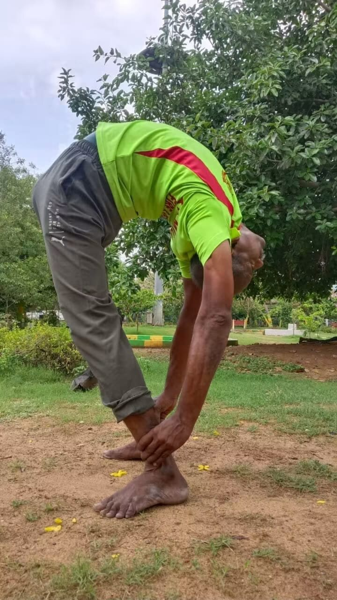

Asanas
Postures taught with precision and patience, building strength, flexibility and balance from the foundation up.

Founded by Master U. Ayyampillai · Since 2018
Daily yoga training in asanas, pranayama, kriyas, bandhas and meditation — built on discipline, punctuality and a deep commitment to service.
“In remembrance of and with love for his daughter Eswari, he named the institution EsAn Yogalayam.”
Our Story
EsAn Yogalayam was founded by Master U. Ayyampillai. The name carries a very special and emotional story. His daughter, Eswari Pillai, is a Down Syndrome child. With the intention of learning yoga and teaching yoga specifically for her, Master Ayyampillai began his own journey in yoga.
Started in 2018, the institution has been functioning continuously ever since — conducting yoga classes almost every day throughout the year, except on Sunday evenings.
Over the years, around 300–400 students and parents have practised yoga here. The focus has never been only on teaching yoga, but also on creating opportunities and support for students from every background. Economically disadvantaged children, including students from government schools, are trained without any fees.


The Master
M.Sc YogaFounder, EsAn Yogalayam
Master U. Ayyampillai began his journey in yoga with a single purpose: to learn and teach yoga for his daughter Eswari. That purpose grew into EsAn Yogalayam, and into a practice he has shared without pause since 2018.
He continues to share his knowledge and experience with people of every age group and background, from young competitors preparing for national platforms to adults seeking relief from health-related difficulties. Discipline is the first principle in his classes, and he leads it by example, on the mat every morning before sunrise.
Considered the first and most important principle in every class.
Sessions start on time, every time. Respect for the practice begins with respect for the hour.
Yoga reveals its benefits through consistency — not intensity.
Regular Yoga Training
Training at EsAn Yogalayam is not limited to asanas alone. Students are systematically introduced to the full breadth of yogic practice — supporting physical fitness, mental well-being, concentration and disciplined living.
Postures taught with precision and patience, building strength, flexibility and balance from the foundation up.
Breath regulation techniques that calm the mind, steady the nervous system and expand vital energy.
Cleansing practices that purify the body and prepare it for deeper, more sustained practice.
Energy locks that channel and direct prana, refining the connection between breath, body and awareness.
Guided stillness that cultivates concentration, clarity and a quiet, resilient mind.
Regularity, punctuality and self-restraint — the habits that turn practice into a way of life.
Personal training and other specialised sessions are also conducted according to the needs of each student.
Class Schedule
Classes run almost every day throughout the year. The only pause is on Sunday evenings. Arrive a few minutes early — punctuality is part of the practice.
Enquire About a BatchSessions begin at 5:30 AM and continue in batches through the early morning — the most disciplined hour of the day.
A dedicated late-morning batch designed for women, with a calm and focused environment.
Evening batches for students, working adults and competitive trainees. Not held on Sunday evenings.
One-to-one and specialised sessions arranged according to the needs of the student.
Achievements
Several senior players trained at EsAn Yogalayam have gone on to compete and train at the highest levels. Many students have continued their yoga journey and found success across different competitions and platforms.
Students who have achieved Gold at the School Games Federation of India level.
Senior players selected for and participating in Khelo India competitions and camps.
Representation at the National Games — the pinnacle of competitive yoga in India.
Trainees participating in university-level training camps and championships.
Service Through Yoga
Master U. Ayyampillai continues to share his knowledge and experience with people from different age groups and backgrounds. Service has always been at the heart of EsAn Yogalayam.
Many adults who came to the institution with various health-related difficulties have experienced improvement through regular practice — and have continued their lives with greater confidence and well-being.
Economically disadvantaged children, including government-school students, are trained at no cost.
Children, parents, working adults and seniors practise together under one roof.
Regular practice has helped many adults regain confidence, mobility and well-being.
Promising students are guided towards competitions, camps and higher-level opportunities.
International Day of Yoga
Every year, EsAn Yogalayam conducts a special programme for the International Day of Yoga. It is organised independently — the institution makes its own arrangements and encourages students to actively participate and showcase their skills.
The aim is not merely to conduct a programme, but to give students an opportunity to demonstrate their discipline, confidence, dedication and learning through yoga.
Our Vision
The journey continues with the vision of creating greater awareness about the importance of yoga, discipline and healthy living.
Continue serving people of every background through yoga.
Keep the doors open for those who cannot afford fees.
Guide promising students towards higher platforms.
Help more people experience the change yoga brings.
“Yoga is not just an exercise — it is a disciplined way of life.”
— Master U. Ayyampillai, Founder
Join a Class
New students are welcome in every batch. Visit us during any session, or reach out to discuss personal training and specialised programmes.